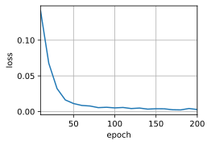

DL model with RSA¶
This is a notebook used to investigate if deep learning model can decrypt message encrypted by RSA algorithm.
[1]:
import math
import pandas as pd
import torch
from torch import nn
from d2l import torch as d2l
import os
import example #self-created package used to encrypt message
Load Data and Preprocess¶
[2]:
# use English-to-Freach translation dataset
# we will only use the English part to encrypt nad decrypt
d2l.DATA_HUB['fra-eng'] = (d2l.DATA_URL + 'fra-eng.zip',
'94646ad1522d915e7b0f9296181140edcf86a4f5')
#@save
def read_data_nmt():
"""Load the English-French dataset."""
data_dir = d2l.download_extract('fra-eng')
with open(os.path.join(data_dir, 'fra.txt'), 'r') as f:
return f.read()
text = read_data_nmt()
print(text[:75])
Go. Va !
Hi. Salut !
Run! Cours !
Run! Courez !
Who? Qui ?
Wow! Ça alors !
[3]:
#preprocess
def preprocess(text):
"""Preprocess the English-French dataset."""
def no_space(char, prev_char):
return char in set(',.!?') and prev_char != ' '
# Replace non-breaking space with space, and convert uppercase letters to
# lowercase ones
text = text.replace('\u202f', ' ').replace('\xa0', ' ').lower()
# Insert space between words and punctuation marks
out = [
' ' + char if i > 0 and no_space(char, text[i - 1]) else char
for i, char in enumerate(text)]
return ''.join(out)
[4]:
text = preprocess(text)
print(text[:80])
go . va !
hi . salut !
run ! cours !
run ! courez !
who ? qui ?
wow ! ça alors !
[5]:
# tokenize rsa
def tokenize(text, num_examples=None):
"""
Tokenize the English-French dataset.
Only English is used for RSA
"""
target = []
for i, line in enumerate(text.split('\n')):
if num_examples and i > num_examples:
break
parts = line.split('\t')
if len(parts) == 2:
target.append(parts[0].split(' '))
return target
# English original sentence is our target, and
# its encrypted message is our source
target_rsa = tokenize(text)
target_rsa[:6]
[5]:
[['go', '.'],
['hi', '.'],
['run', '!'],
['run', '!'],
['who', '?'],
['wow', '!']]
[6]:
#Truncate or pad sequences to ensure input has the same length/shape (num_steps)
def truncate_pad(line, num_steps, padding_token):
"""Truncate or pad sequences."""
if len(line) > num_steps:
return line[:num_steps] # Truncate
return line + [padding_token] * (num_steps - len(line)) # Pad
[7]:
# Create a RSA library used to do Encryption
rsa_lib = example.RSA_lib()
[8]:
def build_array_rsa(lines, vocab, num_steps):
"""Transform text sequences of machine translation into minibatches."""
lines = [vocab[l] for l in lines] # string to its indices in vocabulary
lines = [l + [vocab['<eos>']] for l in lines] # add final end-of-sentence symbol
# truncate or pad to ensure the same shape
array_tgt = torch.tensor([truncate_pad(l, num_steps, vocab['<pad>']) for l in lines])
# find valid length
valid_len = (array_tgt != vocab['<pad>']).type(torch.int32).sum(1)
# compute soruce array (input X of Transfomer) by encrypting
array_src_raw = torch.tensor([ rsa_lib.encode(l) for line in array_tgt for l in line]).reshape(array_tgt.shape)
return array_src_raw, array_tgt, valid_len
[9]:
# create rsa source vocabulary that is a one-to-one map to encrypted message
# the reason is power over a number is very large here
def rsa_src_vocab(array_raw):
# convert tensor to a list
a = []
for lines in array_raw:
ls = []
for l in lines:
ls.append(l.item())
a.append(ls)
# then create the Vocabulary
rsa_src_vocab = d2l.Vocab(a)
# finally convert the arrary
array_src = torch.tensor([ rsa_src_vocab[l] for line in a for l in line]).reshape(array_raw.shape)
return rsa_src_vocab, array_src
[10]:
def load_data_rsa(batch_size, num_steps, num_examples=600):
"""Return the iterator and the vocabularies of the translation dataset."""
text = preprocess(read_data_nmt())
target = tokenize(text, num_examples)
tgt_vocab = d2l.Vocab(target, min_freq=2, reserved_tokens=['<pad>', '<bos>', '<eos>'])
src_array_raw, tgt_array, tgt_valid_len = build_array_rsa(target, tgt_vocab, num_steps)
src_vocab, src_array = rsa_src_vocab(src_array_raw)
# target valid length now is equal to source target length
data_arrays = (src_array, tgt_valid_len, tgt_array, tgt_valid_len)
data_iter = d2l.load_array(data_arrays, batch_size)
return data_iter, src_vocab, tgt_vocab
[11]:
train_iter, src_vocab, tgt_vocab = load_data_rsa(batch_size=2, num_steps=10)
for X, X_valid_len, Y, Y_valid_len in train_iter:
print('X:', X.type(torch.int32))
print('valid lengths for X:', X_valid_len)
print('Y:', Y.type(torch.int32))
print('valid lengths for Y:', Y_valid_len)
break
X: tensor([[ 9, 28, 3, 2, 1, 1, 1, 1, 1, 1],
[163, 34, 4, 2, 1, 1, 1, 1, 1, 1]], dtype=torch.int32)
valid lengths for X: tensor([4, 4])
Y: tensor([[ 9, 28, 4, 3, 1, 1, 1, 1, 1, 1],
[163, 34, 5, 3, 1, 1, 1, 1, 1, 1]], dtype=torch.int32)
valid lengths for Y: tensor([4, 4])
Transformer¶
We first give the network structure.
[12]:
class PositionWiseFFN(nn.Module):
"""Positionwise feed-forward network."""
def __init__(self, ffn_num_input, ffn_num_hiddens, ffn_num_outputs,
**kwargs):
super(PositionWiseFFN, self).__init__(**kwargs)
self.dense1 = nn.Linear(ffn_num_input, ffn_num_hiddens)
self.relu = nn.ReLU()
self.dense2 = nn.Linear(ffn_num_hiddens, ffn_num_outputs)
def forward(self, X):
return self.dense2(self.relu(self.dense1(X)))
[13]:
class AddNorm(nn.Module):
"""Residual connection followed by layer normalization."""
def __init__(self, normalized_shape, dropout, **kwargs):
super(AddNorm, self).__init__(**kwargs)
self.dropout = nn.Dropout(dropout)
self.ln = nn.LayerNorm(normalized_shape)
def forward(self, X, Y):
return self.ln(self.dropout(Y) + X)
[14]:
class EncoderBlock(nn.Module):
"""Transformer encoder block."""
def __init__(self, key_size, query_size, value_size, num_hiddens,
norm_shape, ffn_num_input, ffn_num_hiddens, num_heads,
dropout, use_bias=False, **kwargs):
super(EncoderBlock, self).__init__(**kwargs)
self.attention = d2l.MultiHeadAttention(key_size, query_size,
value_size, num_hiddens,
num_heads, dropout, use_bias)
self.addnorm1 = AddNorm(norm_shape, dropout)
self.ffn = PositionWiseFFN(ffn_num_input, ffn_num_hiddens,
num_hiddens)
self.addnorm2 = AddNorm(norm_shape, dropout)
def forward(self, X, valid_lens):
Y = self.addnorm1(X, self.attention(X, X, X, valid_lens))
return self.addnorm2(Y, self.ffn(Y))
[15]:
class TransformerEncoder(d2l.Encoder):
"""Transformer encoder."""
def __init__(self, vocab_size, key_size, query_size, value_size,
num_hiddens, norm_shape, ffn_num_input, ffn_num_hiddens,
num_heads, num_layers, dropout, use_bias=False, **kwargs):
super(TransformerEncoder, self).__init__(**kwargs)
self.num_hiddens = num_hiddens
self.embedding = nn.Embedding(vocab_size, num_hiddens)
self.pos_encoding = d2l.PositionalEncoding(num_hiddens, dropout)
self.blks = nn.Sequential()
for i in range(num_layers):
self.blks.add_module(
"block" + str(i),
EncoderBlock(key_size, query_size, value_size, num_hiddens,
norm_shape, ffn_num_input, ffn_num_hiddens,
num_heads, dropout, use_bias))
def forward(self, X, valid_lens, *args):
# Since positional encoding values are between -1 and 1, the embedding
# values are multiplied by the square root of the embedding dimension
# to rescale before they are summed up
X = self.pos_encoding(self.embedding(X) * math.sqrt(self.num_hiddens))
self.attention_weights = [None] * len(self.blks)
for i, blk in enumerate(self.blks):
X = blk(X, valid_lens)
self.attention_weights[
i] = blk.attention.attention.attention_weights
return X
[16]:
class DecoderBlock(nn.Module):
# The `i`-th block in the decoder
def __init__(self, key_size, query_size, value_size, num_hiddens,
norm_shape, ffn_num_input, ffn_num_hiddens, num_heads,
dropout, i, **kwargs):
super(DecoderBlock, self).__init__(**kwargs)
self.i = i
self.attention1 = d2l.MultiHeadAttention(key_size, query_size,
value_size, num_hiddens,
num_heads, dropout)
self.addnorm1 = AddNorm(norm_shape, dropout)
self.attention2 = d2l.MultiHeadAttention(key_size, query_size,
value_size, num_hiddens,
num_heads, dropout)
self.addnorm2 = AddNorm(norm_shape, dropout)
self.ffn = PositionWiseFFN(ffn_num_input, ffn_num_hiddens,
num_hiddens)
self.addnorm3 = AddNorm(norm_shape, dropout)
def forward(self, X, state):
enc_outputs, enc_valid_lens = state[0], state[1]
# During training, all the tokens of any output sequence are processed
# at the same time, so `state[2][self.i]` is `None` as initialized.
# When decoding any output sequence token by token during prediction,
# `state[2][self.i]` contains representations of the decoded output at
# the `i`-th block up to the current time step
if state[2][self.i] is None:
key_values = X
else:
key_values = torch.cat((state[2][self.i], X), axis=1)
state[2][self.i] = key_values
if self.training:
batch_size, num_steps, _ = X.shape
# Shape of `dec_valid_lens`: (`batch_size`, `num_steps`), where
# every row is [1, 2, ..., `num_steps`]
dec_valid_lens = torch.arange(1, num_steps + 1,
device=X.device).repeat(
batch_size, 1)
else:
dec_valid_lens = None
# Self-attention
X2 = self.attention1(X, key_values, key_values, dec_valid_lens)
Y = self.addnorm1(X, X2)
# Encoder-decoder attention. Shape of `enc_outputs`:
# (`batch_size`, `num_steps`, `num_hiddens`)
Y2 = self.attention2(Y, enc_outputs, enc_outputs, enc_valid_lens)
Z = self.addnorm2(Y, Y2)
return self.addnorm3(Z, self.ffn(Z)), state
[17]:
class TransformerDecoder(d2l.AttentionDecoder):
def __init__(self, vocab_size, key_size, query_size, value_size,
num_hiddens, norm_shape, ffn_num_input, ffn_num_hiddens,
num_heads, num_layers, dropout, **kwargs):
super(TransformerDecoder, self).__init__(**kwargs)
self.num_hiddens = num_hiddens
self.num_layers = num_layers
self.embedding = nn.Embedding(vocab_size, num_hiddens)
self.pos_encoding = d2l.PositionalEncoding(num_hiddens, dropout)
self.blks = nn.Sequential()
for i in range(num_layers):
self.blks.add_module(
"block" + str(i),
DecoderBlock(key_size, query_size, value_size, num_hiddens,
norm_shape, ffn_num_input, ffn_num_hiddens,
num_heads, dropout, i))
self.dense = nn.Linear(num_hiddens, vocab_size)
def init_state(self, enc_outputs, enc_valid_lens, *args):
return [enc_outputs, enc_valid_lens, [None] * self.num_layers]
def forward(self, X, state):
X = self.pos_encoding(self.embedding(X) * math.sqrt(self.num_hiddens))
self._attention_weights = [[None] * len(self.blks) for _ in range(2)]
for i, blk in enumerate(self.blks):
X, state = blk(X, state)
# Decoder self-attention weights
self._attention_weights[0][
i] = blk.attention1.attention.attention_weights
# Encoder-decoder attention weights
self._attention_weights[1][
i] = blk.attention2.attention.attention_weights
return self.dense(X), state
@property
def attention_weights(self):
return self._attention_weights
Train and Predict¶
[18]:
num_hiddens, num_layers, dropout, batch_size, num_steps = 32, 2, 0.1, 64, 10
lr, num_epochs, device = 0.005, 200, d2l.try_gpu()
ffn_num_input, ffn_num_hiddens, num_heads = 32, 64, 4
key_size, query_size, value_size = 32, 32, 32
norm_shape = [32]
train_iter, src_vocab, tgt_vocab = load_data_rsa(batch_size, num_steps)
encoder = TransformerEncoder(len(src_vocab), key_size, query_size, value_size,
num_hiddens, norm_shape, ffn_num_input,
ffn_num_hiddens, num_heads, num_layers, dropout)
decoder = TransformerDecoder(len(tgt_vocab), key_size, query_size, value_size,
num_hiddens, norm_shape, ffn_num_input,
ffn_num_hiddens, num_heads, num_layers, dropout)
net = d2l.EncoderDecoder(encoder, decoder)
d2l.train_seq2seq(net, train_iter, lr, num_epochs, tgt_vocab, device)
loss 0.003, 6850.1 tokens/sec on cpu

Transformer seems to be able to decrypt message.
[19]:
import numpy as np
def message_to_X(raw_sentence, raw_vocab, num_steps):
"""convert message to indices of encrypted message in source vocabublary"""
# print(raw_sentence)
raw_inds = raw_vocab[raw_sentence.lower().split(' ')] + [raw_vocab['<eos>']]
# print(raw_inds)
valid_length = len(raw_inds)
# print(valid_length)
raw_inds = d2l.truncate_pad(raw_inds, num_steps, raw_vocab['<pad>'])
encrypted_mess = [rsa_lib.encode(index) for index in raw_inds]
return torch.tensor(src_vocab[encrypted_mess]), torch.tensor([valid_length])
[20]:
def predict_seq2seq(net, src_tokens, enc_valid_len, tgt_vocab, num_steps,
device, save_attention_weights=False):
"""Predict for sequence to sequence."""
# evaluation mode
net.eval()
# Add the batch axis
enc_X = torch.unsqueeze(
torch.tensor(src_tokens, dtype=torch.long, device=device), dim=0)
enc_outputs = net.encoder(enc_X, enc_valid_len)
dec_state = net.decoder.init_state(enc_outputs, enc_valid_len)
# Add the batch axis
dec_X = torch.unsqueeze(torch.tensor(
[tgt_vocab['<bos>']], dtype=torch.long, device=device), dim=0)
output_seq, attention_weight_seq = [], []
for _ in range(num_steps):
Y, dec_state = net.decoder(dec_X, dec_state)
# We use the token with the highest prediction likelihood as the input
# of the decoder at the next time step
dec_X = Y.argmax(dim=2)
pred = dec_X.squeeze(dim=0).type(torch.int32).item()
# Save attention weights (to be covered later)
if save_attention_weights:
attention_weight_seq.append(net.decoder.attention_weights)
# Once the end-of-sequence token is predicted, the generation of the
# output sequence is complete
if pred == tgt_vocab['<eos>']:
break
output_seq.append(pred)
return ' '.join(tgt_vocab.to_tokens(output_seq)), attention_weight_seq
[21]:
engs = ['go .', "i lost .", 'he\'s calm .', 'i\'m home .'] # target
for eng in engs:
x, valid_len = message_to_X(eng, tgt_vocab, 10)
translation, dec_attention_weight_seq = predict_seq2seq(
net, x, valid_len, tgt_vocab, num_steps, device, True)
print(translation)
go .
i lost .
he's calm .
i'm home .
/var/folders/jx/l2fp0rys0t30l4wlc1m6645r0000gn/T/ipykernel_28950/2525470819.py:8: UserWarning: To copy construct from a tensor, it is recommended to use sourceTensor.clone().detach() or sourceTensor.clone().detach().requires_grad_(True), rather than torch.tensor(sourceTensor).
torch.tensor(src_tokens, dtype=torch.long, device=device), dim=0)
Pefectly right!!!